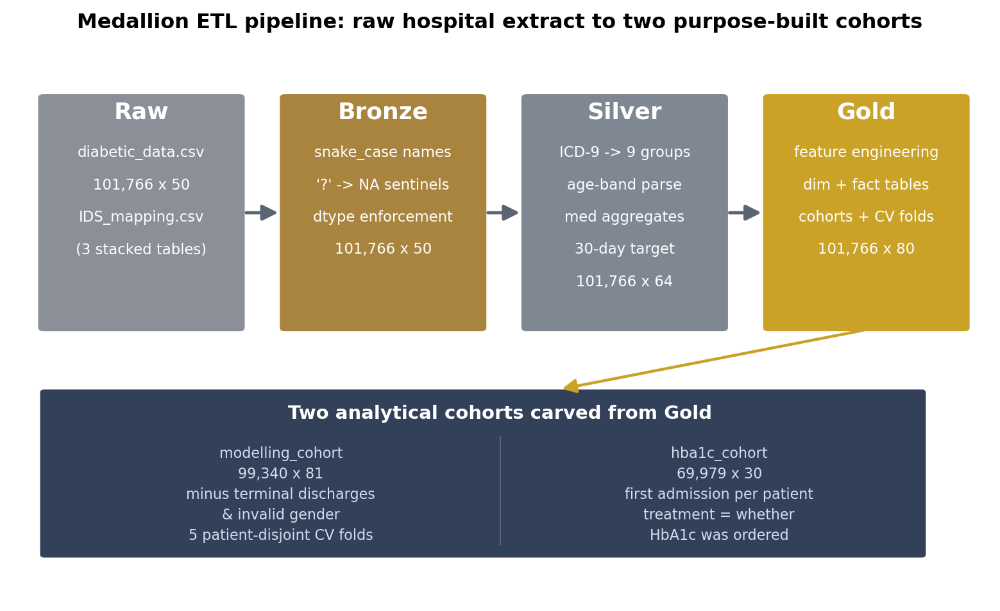
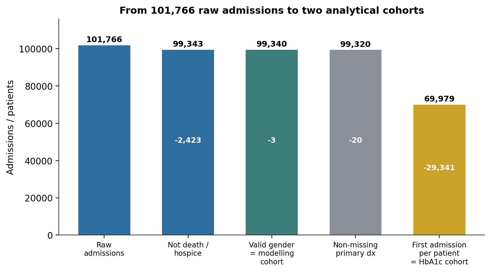
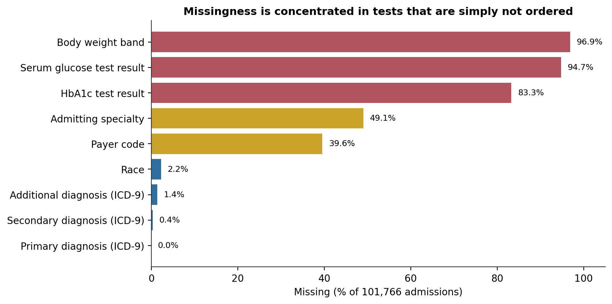
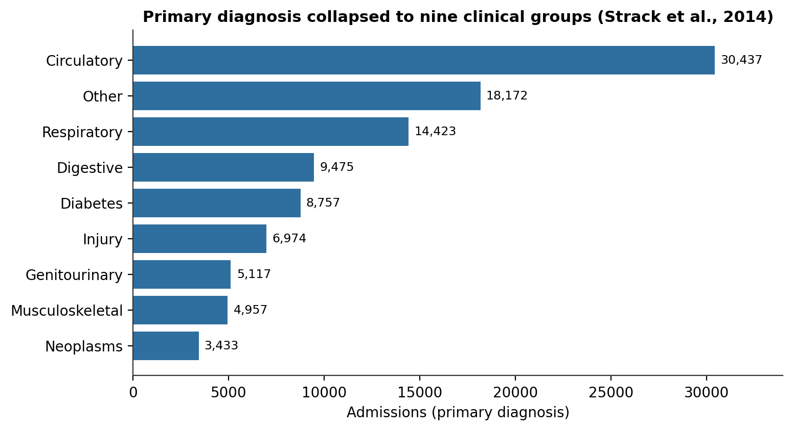
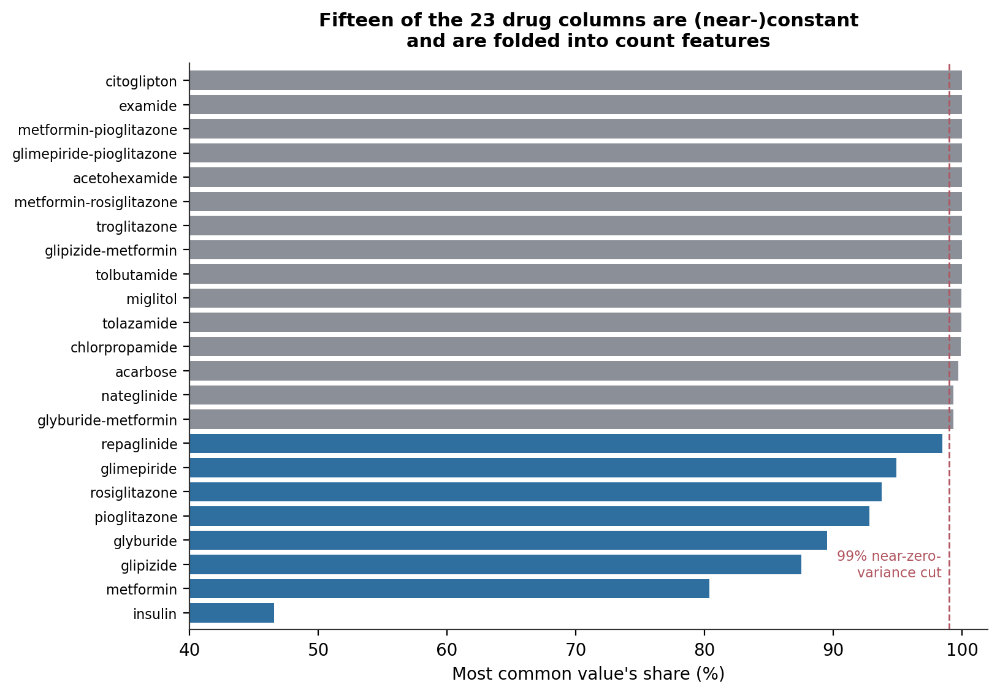
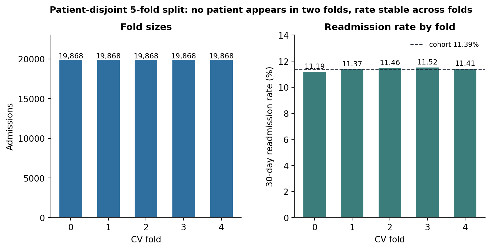
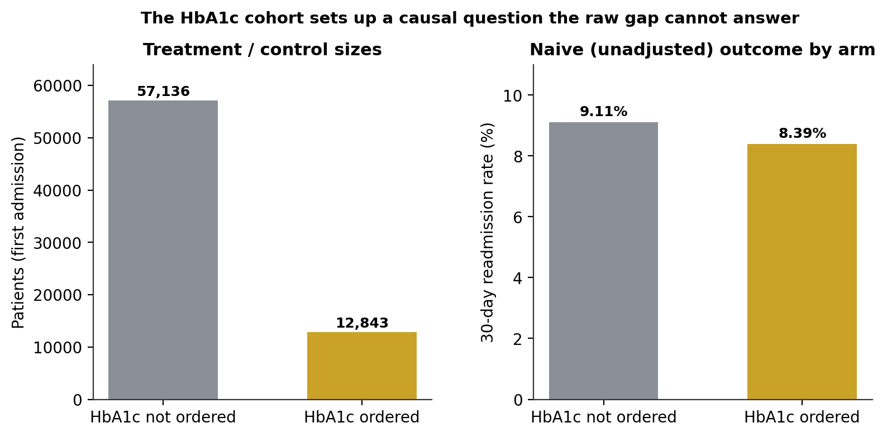

A Medallion ETL Pipeline for a Diabetic Inpatient Cohort: ICD-9 Diagnosis Grouping and Patient-Disjoint Cross-Validation Folds
Turning a 101,766-row hospital extract and a three-in-one code lookup into two purpose-built analytical substrates — a leakage-aware Bronze → Silver → Gold contract, an eight-plus-one ICD-9 grouping that collapses 700+ diagnosis codes, and pre-computed folds where no patient is ever split across train and test.
A four-tier medallion ETL pipeline for ten years of inpatient encounters among diabetic patients at 130 US hospitals. Sentinel discipline: the ? token that encodes “not recorded” across seven columns is resolved to a true null before any business logic runs; HbA1c and serum-glucose results are missing on 83% and 95% of admissions because the tests are simply not ordered, and that absence is preserved as a signal. Diagnosis grouping: 700+ distinct ICD-9 codes per diagnosis field collapse to the nine clinical groups of Strack et al. (2014). Leakage control: five cross-validation folds are pre-computed with GroupKFold on the patient identifier, so a patient’s repeat admissions never straddle the split. Output: six validated Parquet tables — a feature-engineered fact grain, a 99,340-admission modelling cohort, and a 69,979-patient cohort built to carry a downstream causal question about HbA1c testing.
medallion architecture, bronze silver gold, ETL pipeline, sentinel encoding, missing data, ICD-9 grouping, hospital readmission, diabetes, GroupKFold, patient-disjoint splits, data leakage, cross-validation, feature engineering, Parquet, pandas, Python
Overview
This is the extract–transform–load (ETL) stage of a seven-part project on hospital readmission among diabetic patients. It has one job: turn a raw clinical extract — 101,766 inpatient encounters in a single CSV, plus a small three-in-one code lookup — into an analysis-ready set of Parquet tables that the exploratory, predictive-modelling, causal, decision-analysis, clustering, and length-of-stay notebooks each load without re-running any upstream logic.
The source is the widely used Diabetes 130-US Hospitals dataset (Strack et al., 2014; Clore et al., 2014), an extract of inpatient encounters between 1999 and 2008 across 130 US hospitals and integrated delivery networks. Every row is one hospital admission of a patient with diabetes listed as a diagnosis; the 101,766 admissions belong to 71,518 distinct patients, so repeat admissions are common and consequential. The analytical target throughout the project is readmission within 30 days of discharge, derived from the source’s three-level readmitted field.
The pipeline follows a four-tier medallion architecture (Raw → Bronze → Silver → Gold). Each tier has a strict contract, a distinct fault-isolation boundary, and a persisted Parquet snapshot any downstream consumer can reload independently (Figure 1). Two design commitments shape everything that follows:
- A missing lab result is a clinical decision, not a data-quality defect. The HbA1c result is absent on 83% of admissions and the serum-glucose result on 95% — not because the data is corrupted, but because a clinician chose not to order the test. That choice is itself informative, and one downstream notebook treats whether HbA1c was measured as a causal exposure. The pipeline therefore preserves the not-ordered state as an explicit category rather than discarding those rows.
- The unit of independence is the patient, not the admission. Because 30% of admissions are repeat visits, a naive row-level train/test split would place the same patient on both sides and let a model memorise patient-specific patterns. The Gold layer pre-computes five cross-validation folds with
GroupKFoldon the patient identifier, so every downstream notebook inherits a leakage-controlled split by construction.

Pipeline architecture
Table 1 summarises the four tiers and the shape of the main admissions table at each stage. Row count is preserved from Raw through Gold — every tier is a transformation, not a filter. Filtering happens only when the Gold layer carves its cohorts, and every dropped admission is attributed to exactly one exclusion (Figure 2).
Table 1
The Four Medallion Tiers and the Admissions Table at Each Stage
| Tier | Contract | Admissions table | Persisted to |
|---|---|---|---|
| Raw | Immutable byte-for-byte snapshot of the source, converted to Parquet for a typed audit trail | 101,766 × 50 | data/raw/parquet/ |
| Bronze | Structural cleaning only — column-name normalisation, dtype enforcement, ? → null on seven columns, defensive de-duplication |
101,766 × 50 | data/bronze/ |
| Silver | Business logic — age-band parsing, ICD-9 grouping, medication aggregates, lab-result encoding, 30-day target derivation | 101,766 × 64 | data/silver/ |
| Gold | Analytical feature engineering, dimension tables, and the two cohorts with pre-computed folds | 101,766 × 80 | data/gold/ |
Note. Silver is persisted rather than held in memory so that a business-logic bug can be debugged without re-running the Bronze chain. All feature engineering lives in Gold, so downstream notebooks never re-implement a transformation or risk diverging from one another’s definitions.

Raw: the source and its one structural oddity
The main file loads cleanly as 101,766 rows by 50 columns. The second file, IDS_mapping.csv, is 2,479 characters and is not a single table: it is three stacked sub-tables — for admission type, discharge disposition, and admission source — each with its own header row, separated by a line containing a single comma. A standard CSV read picks up only the first sub-table and treats the other two as malformed rows; a byte-level check confirms the separator is \n,\n, not the blank line the documentation implies, and that splitting on a true blank line returns one block instead of three. The Bronze parser splits on the regular expression \n[\s,]*\n, which absorbs the comma-only separator and any whitespace-only line a future export might introduce, then parses each block as its own mini-CSV. A defensive assertion confirms exactly three sub-tables come back, in the expected order, before any Gold join can fail silently.
Bronze: structural cleaning and the sentinel contract
Bronze does the unglamorous structural work and nothing else: it normalises the 50 column names to snake_case with acronym-aware splitting (A1Cresult → a1c_result, glyburide-metformin → glyburide_metformin), enforces integer dtypes on the identifier and count columns, trims whitespace from every string field, and de-duplicates on the encounter identifier (defensive — the source has no duplicates). Medication fields keep their raw {No, Steady, Up, Down} values; the target keeps its raw {<30, >30, NO} values. Nothing domain-specific happens yet.
The one contract that matters here is the sentinel. The source encodes “not recorded” as the literal string ? in seven columns. Bronze converts ? to a true null in exactly those seven and leaves every other ?-free column untouched. Table 2 shows where the missingness lands after that conversion, and Figure 3 makes the shape unmistakable: it is bimodal. Five columns are missing on a third or more of admissions — two of them on more than 90%; the remaining fields are near-complete.
Table 2
Missingness After Sentinel Resolution (n = 101,766)
| Column | Missing | % | Interpretation |
|---|---|---|---|
weight |
98,569 | 96.9 | Not routinely recorded; unusable, retained for transparency |
max_glu_serum |
96,420 | 94.8 | Serum glucose test not ordered |
a1c_result |
84,748 | 83.3 | HbA1c test not ordered |
medical_specialty |
49,949 | 49.1 | Admitting specialty not coded |
payer_code |
40,256 | 39.6 | Payer not coded |
race |
2,273 | 2.2 | Genuinely missing |
diag_3 |
1,423 | 1.4 | No third diagnosis assigned |
diag_2 |
358 | 0.4 | No secondary diagnosis assigned |
diag_1 |
21 | 0.02 | No primary diagnosis (excluded from the causal cohort) |
Note. weight is kept through Gold for auditability and excluded from every modelling feature set without further analysis. The a1c_result and max_glu_serum gaps are treated as clinical decisions, not defects.

Silver: business logic
Silver is where domain knowledge enters. Six transformations do the substantive work:
- Age-band parsing. The raw
agefield is a string bucket such as[70-80). Silver keeps it as an ordered categorical and derives a numeric midpoint, so tree models get the ordering and linear models get a continuous value. - ICD-9 clinical grouping. Each of the three diagnosis fields (
diag_1,diag_2,diag_3) carries 700–800 distinct ICD-9 codes. Silver maps each to the nine-category grouping of Strack et al. (2014) — Circulatory, Respiratory, Digestive, Diabetes, Injury, Musculoskeletal, Genitourinary, Neoplasms, and a residual Other that also absorbs V- and E-codes. Figure 4 shows the primary-diagnosis distribution: circulatory conditions dominate at 30,437 admissions, and diabetes is the primary diagnosis in only 8,757 — in the rest it is comorbid, which is consistent with how the dataset was assembled. - Terminal-discharge flag. Discharge disposition IDs 11, 13, 14, 19, 20, and 21 denote death or hospice transfer — patients who cannot, by definition, be readmitted. Silver flags these 2,423 admissions rather than dropping them, so the exploratory analysis still sees the full population while the modelling cohort can exclude them.
- Medication aggregates. The 23 individual drug columns collapse into five counts — drugs started, increased, decreased, held steady, and changed in either direction — plus a
changeflag and adiabetes_medflag. Figure 5 is the justification: 15 of the 23 columns take their most common value on 99% or more of admissions, and two (examide,citoglipton) are constant. Used individually they are noise; aggregated they are a usable measure of regimen intensity. - Lab-result encoding. The source documentation describes the not-measured state of
a1c_resultandmax_glu_serumas the stringNone, but the raw CSV encodes it as an empty cell. Silver fills it to the stringNonebefore building the ordered categorical, so the Gold-layer comparison that derives the “was HbA1c tested” flag tests against a real value rather than falling into null-comparison semantics. - Target derivation.
readmitted_30dis 1 when the sourcereadmittedfield is<30, else 0. Deriving it once, here, guarantees every downstream notebook shares an identical target definition. The Silver-level base rate is 11.16% (11,357 of 101,766).
Table 3 lists the engineered columns Silver adds.
Table 3
Columns Engineered in the Silver Layer
| Column | Type | Definition |
|---|---|---|
age_midpoint |
numeric | Midpoint of the raw age band (e.g. [70-80) → 75) |
diag_{1,2,3}_group |
categorical | ICD-9 code mapped to one of nine clinical groups |
is_terminal_discharge |
flag | Discharge disposition in {11, 13, 14, 19, 20, 21} |
n_meds_{up, down, steady, changed, prescribed} |
counts | Aggregates over the 23 drug columns |
change_flag, diabetes_med_flag |
flags | Any regimen change; any diabetes medication prescribed |
n_prior_visits_total |
count | Outpatient + emergency + inpatient visits in the prior year |
readmitted_30d |
target | 1 if readmitted = <30, else 0 |
Note. The three IDS lookup sub-tables are also cleaned here — rows whose description is the literal NULL are dropped, taking the tables from 8/30/25 rows to 7/29/24.


examide and citoglipton never vary at all. Silver folds all 23 into five count features rather than carrying them individually.Gold: features, dimensions, and cohorts
Gold begins with a dtype-sanitisation pass that resolves the tensions Silver deliberately left in place: nullable string columns with real nulls become plain-object columns with "Missing" filled (so scikit-learn encoders do not raise on ambiguous nulls), categoricals become plain objects (so category-unaware encoders do not silently pass them through), and nullable integer and float columns become NumPy primitives (so SMOTE, statsmodels, and variance-inflation computations work). It then adds analytical features — a quadratic age term, the binary has_hba1c_tested exposure flag, elevated-HbA1c and elevated-glucose indicators, a comorbidity-count across the nine diagnosis groups, an age × prior-utilisation interaction, a medication-change ratio, and nine primary-diagnosis dummy columns — taking the fact table to 101,766 × 80.
From that fact table Gold carves six persisted tables (Table 4): three thin dimension lookups, the full fact grain, and the two analytical cohorts.
Table 4
The Six Gold Tables
| Table | Shape | Size | Consumed by |
|---|---|---|---|
dim_admission_gold |
7 × 2 | <0.01 MB | Reference joins |
dim_discharge_gold |
29 × 3 | <0.01 MB | Reference joins (carries an is_terminal flag) |
dim_admission_source_gold |
24 × 2 | <0.01 MB | Reference joins |
hospital_admissions_gold |
101,766 × 80 | 8.56 MB | Exploratory analysis |
modelling_cohort_gold |
99,340 × 81 | 8.52 MB | Predictive modelling, clustering, length-of-stay regression |
hba1c_cohort_gold |
69,979 × 30 | 3.16 MB | Causal analysis of HbA1c testing |
Note. Parquet is written without dictionary encoding for stable, portable column types. On-disk sizes are read back from disk after writing, so a serialisation anomaly would be visible immediately.
The two cohorts and the fold structure
The modelling cohort applies two exclusions to the fact table: the 2,423 terminal-discharge admissions and the 3 admissions with an invalid gender value. That leaves 99,340 admissions. Because the excluded terminal discharges are non-readmissions by construction, removing them nudges the base rate up slightly, from 11.16% to 11.39% (11,314 positives). The cohort then receives its cv_fold column: five folds assigned by GroupKFold on the patient identifier. The folds come out exactly balanced at 19,868 admissions each, the 30-day readmission rate is stable across them (11.19%–11.52%), and — the property that matters — no patient appears in more than one fold (Figure 6). Every downstream supervised notebook uses these five columns directly, so none of them can accidentally reintroduce a row-level split.

The HbA1c cohort is built for a different question. The downstream causal notebook asks whether ordering an HbA1c test during the admission changes the 30-day readmission risk — a question that needs one row per patient (so a patient cannot appear as both treated and untreated), a non-missing primary diagnosis (so the diagnosis covariate is always defined), and a covariate set restricted to variables that plausibly precede the testing decision. Applying those filters and keeping each patient’s first admission yields 69,979 patients, of whom 12,843 had an HbA1c test ordered and 57,136 did not. The unadjusted readmission rate is 8.39% in the tested arm and 9.11% in the untested arm (Figure 7) — a raw 0.72-percentage-point gap. That gap is a marginal contrast, not a causal estimate: the two arms differ on age, comorbidity load, prior utilisation, and primary diagnosis, all of which drive both the testing decision and the readmission risk. Separating the genuine effect from the confounding surface is the downstream notebook’s job; this pipeline’s job is to hand it a well-formed cohort.

Validation
Before the pipeline is declared complete, six gates check the properties downstream notebooks depend on. All six pass (Table 5).
Table 5
Pipeline Validation Gates
| # | Gate | Result |
|---|---|---|
| 1 | hospital_admissions_gold is non-empty |
Pass — 101,766 rows |
| 2 | Modelling cohort contains both classes | Pass — 11,314 positive (11.4%), 88,026 negative |
| 3 | Modelling cohort has no missing patient identifier | Pass — 0 missing |
| 4 | Every modelling-cohort row has a fold assignment | Pass — 0 unassigned |
| 5 | Both HbA1c arms are non-empty | Pass — 12,843 tested, 57,136 untested |
| 6 | HbA1c cohort is one row per patient | Pass — 69,979 unique patients across 69,979 rows |
Note. A failing gate blocks the downstream notebooks rather than producing a warning; each gate is a pre-condition for the analytical work, not a diagnostic.
Carry-forward findings
Four facts surfaced here that every downstream notebook must account for:
- The 30-day readmission target is imbalanced at roughly 11%. Default 0.5-threshold classification will collapse to the majority class; the modelling notebook needs class weighting and threshold tuning.
- HbA1c and serum-glucose results are missing because the tests were not ordered — 83% and 95% of admissions. The binary was-it-tested flag, not the result value, is the analytically useful quantity, and it is the exposure in the causal notebook.
weightis unusable at 97% missing. It is retained in Gold for transparency and excluded from every feature set.- The medication columns carry almost no individual signal. Two are constant and 13 more are near-constant; they are represented only through the five aggregate counts.
Tools and reproducibility
The pipeline runs in Python 3.10 with pandas 2.2 for all transformation logic, pyarrow for Parquet I/O, and scikit-learn 1.2 for the GroupKFold fold assignment. Each tier’s logic is transcribed inline in the source notebook so that any reader with the two raw files can reproduce the complete Gold layer without the production etl/ package; the Gold outputs are required to be byte-for-byte identical to the package’s output, and a column reorder or a float-precision change counts as a breaking change. Random state is fixed at 42 for the fold assignment. Every headline figure in this article was recomputed from the persisted Bronze, Silver, and Gold tables and the raw CSV.
References
Clore, J., Cios, K., DeShazo, J., & Strack, B. (2014). Diabetes 130-US Hospitals for Years 1999–2008 [Data set]. UCI Machine Learning Repository. https://doi.org/10.24432/C5230J
Harris, C. R., Millman, K. J., van der Walt, S. J., Gommers, R., Virtanen, P., Cournapeau, D., … Oliphant, T. E. (2020). Array programming with NumPy. Nature, 585(7825), 357–362. https://doi.org/10.1038/s41586-020-2649-2
Pedregosa, F., Varoquaux, G., Gramfort, A., Michel, V., Thirion, B., Grisel, O., … Duchesnay, É. (2011). Scikit-learn: Machine learning in Python. Journal of Machine Learning Research, 12, 2825–2830.
The pandas development team. (2020). pandas-dev/pandas: Pandas [Computer software]. Zenodo. https://doi.org/10.5281/zenodo.3509134
Strack, B., DeShazo, J. P., Gennings, C., Olmo, J. L., Ventura, S., Cios, K. J., & Clore, J. N. (2014). Impact of HbA1c measurement on hospital readmission rates: Analysis of 70,000 clinical database patient records. BioMed Research International, 2014, 781670. https://doi.org/10.1155/2014/781670
This is a data-engineering report. All quantities are descriptive properties of a single historical extract (1999–2008); nothing here is a clinical recommendation, and the downstream 30-day readmission target is defined only for the admissions where a subsequent encounter could be observed.